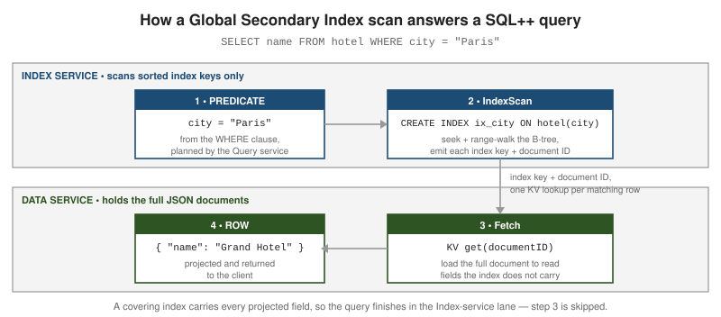

Indexing with the Index service (and legacy Views)
|
This content was generated with the assistance of AI and should be verified against the official documentation before being relied on in production. |
Couchbase separates the storage of indexes from the storage of documents: the Index service maintains
secondary indexes on its own nodes, and the Query service uses them to turn a SQL++ WHERE clause into an
index seek plus a targeted document fetch. This page covers the Global Secondary Index (GSI) types and
options, how to read the plan the optimizer produces, and the legacy MapReduce Views feature that GSI
replaced.
The Index service and Global Secondary Indexes
A Global Secondary Index is a copy of one or more document fields (and any literal or computed key expressions), kept sorted in a B-tree-style structure on Index-service nodes and mapping each index key to a document ID. It is "global" because one logical index is maintained independently of the Data-service partitioning — unlike the old per-node Views — so a scan does not have to fan out to every data node. The Query service seeks or range-walks the index, then asks the Data service for the matching documents by ID.

See Global Secondary Indexes for the architecture and CREATE INDEX for the full statement grammar.
The primary index
-- Every document ID in the keyspace; no predicate needed to build it. CREATE PRIMARY INDEX ON `travel-sample`.inventory.airline USING GSI; -- It lets an unplanned, ad-hoc query run at all: SELECT * FROM `travel-sample`.inventory.airline WHERE callsign = "UNITED"; -- Before 7.6, with no primary index and no other usable index, this failed with -- "No index available on keyspace ... that matches your query"
On Couchbase Server 7.6 the same statement still runs without a primary index: the planner substitutes a
sequential scan (a PrimaryScan3 on the pseudo-index #sequentialscan) that streams every key of the
collection through the KV range scan and filters afterwards, as measured on a collection with no index at all.
That removes the old "No index available" wall for development but not the cost: the work grows with the number
of documents, so it is no replacement for an index you design.
A primary index indexes every key in the keyspace. It makes exploratory queries "just work" in development, but for any predicate it cannot satisfy directly it degrades to a full scan of every key. A production keyspace should carry named secondary indexes for its real query patterns and no primary index; keep the primary index for development and the interactive shell only. See the CREATE INDEX reference.
Secondary and composite indexes
-- Single-field secondary index. CREATE INDEX idx_city ON `travel-sample`.inventory.hotel(city); -- Composite (compound) index: the leading key must be usable by the predicate. CREATE INDEX idx_city_name ON `travel-sample`.inventory.hotel(city, name); -- Serves: WHERE city = ? and WHERE city = ? AND name = ? -- Does not serve: WHERE name = ? (name is not a leading key)
Composite key order is load-bearing in the same way as a relational compound index: put fields matched by
equality first, then a field used for ordering, then a field matched by a range. The
CREATE INDEX page
documents the index-key expression syntax, which may include functions (CREATE INDEX ix ON b(LOWER(name)))
and a trailing INCLUDE MISSING to keep documents that omit the leading key.
Partial (WHERE-clause) indexes
-- Index only the documents that match the index WHERE clause. CREATE INDEX idx_open_orders ON orders(customerId) WHERE status = "OPEN"; SELECT * FROM orders WHERE customerId = 42 AND status = "OPEN"; -- uses idx_open_orders SELECT * FROM orders WHERE customerId = 42; -- cannot: filter not implied
A partial index stores keys for a subset of the keyspace, so it is smaller and cheaper to maintain. The
optimizer uses it only when the query predicate implies the index filter. See the WHERE clause in
CREATE INDEX.
Array indexing
-- Index each element of an array with DISTINCT ARRAY ... FOR ... IN ... END CREATE INDEX idx_sched_day ON `travel-sample`.inventory.route (DISTINCT ARRAY s.day FOR s IN schedule END); -- The ANY ... SATISFIES predicate is now an index scan, not a keyspace scan: SELECT META().id FROM `travel-sample`.inventory.route WHERE ANY s IN schedule SATISFIES s.day = 2 END;
DISTINCT ARRAY collapses duplicate values within one document; ALL ARRAY keeps them. A composite array
index can index several fields per element with FLATTEN_KEYS, and mix array keys with scalar keys:
CREATE INDEX idx_sched ON `travel-sample`.inventory.route (ALL ARRAY FLATTEN_KEYS(s.day, s.utc) FOR s IN schedule END, sourceairport);
See Indexing Arrays for the full form, including nested arrays and array indexes on the document root.
Adaptive indexes
-- One index that covers equality predicates on ANY field...
CREATE INDEX idx_adaptive ON `travel-sample`.inventory.hotel(DISTINCT PAIRS(SELF));
-- ...or a named subset of fields:
CREATE INDEX idx_adaptive_sub ON `travel-sample`.inventory.hotel
(DISTINCT PAIRS({city, country, state, type}));
An adaptive index turns each field/value pair into an index entry, so one index answers equality predicates on many fields without a separate composite index per combination. It suits sparse, unpredictable ad-hoc filtering; it costs more to write and store than a targeted index, so it is a convenience, not a default. See Global Secondary Indexes.
Covering indexes
-- If every field the query reads is in the index key, the Data-service fetch is skipped. CREATE INDEX idx_cover ON `travel-sample`.inventory.hotel(city, name, country); EXPLAIN SELECT name, country FROM `travel-sample`.inventory.hotel WHERE city = "Paris"; -- plan shows an IndexScan3 with a "covers" array and NO Fetch operator
A covered query is the pipeline in the figure above with step 3 removed: the index alone has the answer. Add the projected fields to the tail of the index key to make an otherwise hot query covering. See CREATE INDEX.
Partitioned indexes and index replicas
-- Hash-partition one index across Index nodes; keep one extra copy of each partition.
CREATE INDEX idx_part ON orders(customerId, orderDate)
PARTITION BY HASH(customerId)
WITH { "num_partition": 8, "num_replica": 1 };
PARTITION BY HASH spreads a single large index’s storage and scan load across Index nodes so no one node
holds the whole index. num_replica keeps N additional copies of every partition on other nodes for high
availability and read scale-out; a lost Index node is covered by the replica while the index is rebuilt. See
Index
Partitioning.
Deferred build
-- Create several indexes cheaply, deferring the scan that populates them.
CREATE INDEX idx_a ON orders(a) WITH { "defer_build": true };
CREATE INDEX idx_b ON orders(b) WITH { "defer_build": true };
-- Then build them together in a single pass over the keyspace:
BUILD INDEX ON orders(idx_a, idx_b) USING GSI;
Deferring lets you define many indexes and then populate them in one keyspace scan instead of one scan per
index, which matters when bootstrapping a keyspace or restoring after import. Check readiness with
SELECT * FROM system:indexes WHERE state != "online". See
CREATE INDEX for
defer_build and the BUILD INDEX companion statement.
Worked example: indexing the shop
The shop’s collections were queried for a while with nothing but primary indexes. The indexes below were created
one by one against it and the plan of a matching query read back with EXPLAIN, so each line is a real
observation ([covering] means the plan has no Fetch):
| Index | Query | Plan |
|---|---|---|
|
|
|
|
|
|
|
|
|
|
|
|
|
|
not usable: |
|
|
|
|
|
|
Two lessons are worth drawing out of the table. First, a query that asks only for fields held in the index key
and META().id is covering without any special effort: the first row needed nothing but the index on status.
Second, the partial index is smaller and faster than the full one but is chosen only when the query repeats its
condition: idx_open_orders served the first of these two queries and could not serve the second.
The leading key rule is the one most often broken. An index is a sorted structure, so a predicate has to
constrain its first key for the planner to use it; a predicate on a later key alone cannot seek. With a covering
index on (status, total) filtered to orders, a group-by query that mentions only type falls back to the
sequential scan, while adding AND d.status IS NOT MISSING makes the leading key usable and the whole query,
grouping included, is answered from the index:
CREATE INDEX idx_def_status ON shop._default._default(status, total) WHERE type = "order"; EXPLAIN SELECT d.status, SUM(d.total) FROM shop._default._default d WHERE d.type = "order" GROUP BY d.status; -- PrimaryScan3(#sequentialscan) -> Fetch -> Filter -> InitialGroup -> IntermediateGroup -> FinalGroup EXPLAIN SELECT d.status, SUM(d.total) FROM shop._default._default d WHERE d.type = "order" AND d.status IS NOT MISSING GROUP BY d.status; -- IndexScan3(idx_def_status, covering) -> InitialProject (the aggregation runs inside the index scan)
INCLUDE MISSING on the leading key (CREATE INDEX ix ON ks(category INCLUDE MISSING, price)) lifts the rule at
the price of indexing every document, including those without the field; the statement is accepted on 7.6.
Two options need more nodes than a single-node cluster has. num_replica asks for copies of the index on other
Index nodes, and a one-node cluster refuses it:
CREATE INDEX idx_rep ON shop.sales.orders(placedAt) WITH {"num_replica": 1};
-- error 5000: GSI CreateIndex() - ... There are not enough indexer nodes to create index with replica count of 1.
The partitioned index of the table (PARTITION BY HASH(customerId) with "num_partition": 8) was created fine on
that node; partitions are spread across Index nodes when there is more than one, and all live on the same node
when there is not.
An index can be inspected while it works. system:indexes gives its definition and state, and the Index
service’s own statistics endpoint (port 9102 on the Index node, reached here from inside the container) gives
sizes and counters per index:
docker exec couchbase-shop curl -s -u Administrator:password http://localhost:9102/api/v1/stats
# "shop:sales:orders:idx_orders_status": { "items_count": 7, "num_requests": 85, "num_docs_pending": 0,
# "num_docs_indexed": 174, "initial_build_progress": 100, ... }
items_count equals the number of orders, num_docs_pending of zero means the index has applied every mutation it
was sent (the lag that a not_bounded scan can see is exactly this number), and num_requests is how often it
has been scanned — an index whose request count stays at zero for weeks is a candidate for DROP INDEX, because
every index costs memory and a write on each mutation of the documents it covers.
A deferred index shows its life cycle in system:indexes: after WITH {"defer_build": true} the index is
deferred, after BUILD INDEX it is building, and when the scan finishes it is online:
CREATE INDEX idx_d1 ON shop.sales.orders(placedAt, status) WITH {"defer_build": true};
SELECT name, state FROM system:indexes WHERE keyspace_id = "orders" AND state != "online";
-- [{"name":"idx_d1","state":"deferred"}]
BUILD INDEX ON shop.sales.orders(idx_d1) USING GSI;
-- state: "building", then "online"
Reading query plans: EXPLAIN, ADVISE and the optimizer
EXPLAIN and ADVISE
-- EXPLAIN: print the plan without running the statement. EXPLAIN SELECT name FROM `travel-sample`.inventory.hotel WHERE city = "Paris"; -- ADVISE: ask the Index Advisor which indexes would help this statement. ADVISE SELECT name FROM `travel-sample`.inventory.hotel WHERE city = "Paris" AND country = "France"; -- => recommended: CREATE INDEX adv_city_country ON ...(`city`, `country`)
For the shop’s products, asking for advice on a query that filters on an array element and a range returns, as run:
ADVISE SELECT name FROM shop.sales.products WHERE tags[0] = "usb" AND price < 50; -- recommended index: CREATE INDEX adv_tags0_price ON `default`:`shop`.`sales`.`products`(`tags`[0],`price`) -- rule: "Index keys follow order of predicate types: 2. equality/null/missing, 5. less than/greater than." -- recommended covering index: -- CREATE INDEX adv_tags0_price_name ON ...products(`tags`[0],`price`,`name`)
The advisor lists the indexes that already exist (here the adaptive one) and returns a plain and a covering alternative; it recommends, it never creates.
EXPLAIN returns the operator tree the Query service will execute; ADVISE (and the equivalent Index
Advisor in the Query Workbench) analyses the predicate and suggests covering or composite indexes. Both are
documented under the
Cost-Based
Optimizer and the SQL++ language reference.
The cost-based optimizer and UPDATE STATISTICS
-- Collect distribution statistics so the CBO can cost candidate plans. UPDATE STATISTICS FOR `travel-sample`.inventory.hotel(city, country, type); -- ANALYZE is an accepted synonym: ANALYZE KEYSPACE `travel-sample`.inventory.hotel(city, country);
From Couchbase Server 7.0 the Query service has a cost-based optimizer (CBO): given statistics on the
number of documents, distinct values, and value distribution per index key, it estimates the rows each plan
would touch and picks the cheapest, rather than following fixed rules. With no statistics it falls back to
the older rule-based heuristics. Refresh statistics after a large data change, and force a specific index
with USE INDEX (idx_name USING GSI) when a plan is still wrong. See
Cost-Based
Optimizer.
IndexScan vs. PrimaryScan, covering vs. fetch
EXPLAIN SELECT META().id FROM orders WHERE status = "OPEN";
Read the operator tree top-down:
-
PrimaryScan3— the plan is walking the primary index, i.e. every key in the keyspace. This is almost always a missing secondary index and is the SQL++ equivalent of a MongoDBCOLLSCAN. -
IndexScan3— a secondary GSI drove the query. Itsspansentry shows the seek and range bounds the optimizer derived from the predicate; a narrow span over few keys means the index is selective. -
A
Fetchoperator after the scan means the Data service loaded whole documents (steps 3-4 in the figure). Acoversarray on theIndexScan3and noFetchis a covered query.
For the same ideas on the document-database side — IXSCAN vs. COLLSCAN, the Equality-Sort-Range key
order, covered queries and explain() — see MongoDB Indexing. The
statements these plans come from are covered in
SQL++ querying.
Legacy MapReduce Views
Before the Query and Index services (Couchbase Server 4.0), secondary access was provided by MapReduce
Views: JavaScript map and optional reduce functions stored in design documents per bucket, producing
a sorted view index that clients queried by key or key range over HTTP.
// Design document "_design/orders" holding one view, "by_status"
{
"views": {
"by_status": {
"map": "function (doc, meta) { if (doc.type == 'order') emit(doc.status, doc.total); }",
"reduce": "_sum"
}
}
}
// Query: GET /orders/_design/orders/_view/by_status?key="OPEN"&stale=false
-
mapcallsemit(key, value)once per matching document; the view index is those pairs sorted by key.reduce(_count,_sum,_stats, or a custom function) aggregates over a key range. -
stale=falseforces the view up to date before answering;okandupdate_aftertrade freshness for latency. This is the Views analogue of query scan consistency. -
Spatial views indexed GeoJSON bounding boxes for geo lookups.
A complete round trip, run against the shop bucket. Views are defined and queried over the Views REST port
(8092, "CAPI"), not through SQL++, and they see only the _default collection of a bucket — a view over the
shop bucket returned the three documents placed in _default._default and none of the documents of the
sales collections:
curl -s -X PUT -H 'Content-Type: application/json' -u Administrator:password \
http://localhost:8092/shop/_design/orders \
-d '{"views":{"by_status":{"map":"function (doc, meta) { if (doc.type == \"order\") emit(doc.status, doc.total); }","reduce":"_sum"}}}'
# {"ok":true,"id":"_design/orders"}
curl -s -u Administrator:password 'http://localhost:8092/shop/_design/orders/_view/by_status?group=true&stale=false'
# {"rows":[ {"key":"OPEN","value":30}, {"key":"PAID","value":30} ]}
curl -s -u Administrator:password 'http://localhost:8092/shop/_design/orders/_view/by_status?key=%22OPEN%22&reduce=false&stale=ok'
# {"total_rows":3,"rows":[ {"id":"o1","key":"OPEN","value":10}, {"id":"o2","key":"OPEN","value":20} ]}
Note total_rows, the size of the whole view index. The view answers two questions: the grouped, reduced total per
status, and the matching rows for one key. The same answers from a GSI and SQL++, with no JavaScript, no design
document and the freshness chosen per query instead of per request:
CREATE INDEX idx_def_status ON shop._default._default(status, total) WHERE type = "order";
SELECT d.status, SUM(d.total) AS total, COUNT(*) AS n
FROM shop._default._default d WHERE d.type = "order" AND d.status IS NOT MISSING
GROUP BY d.status ORDER BY d.status;
-- [{"status":"OPEN","total":30,"n":2},{"status":"PAID","total":30,"n":1}]
| MapReduce View | GSI with SQL++ | |
|---|---|---|
Defined by |
JavaScript |
|
Queried by |
HTTP with |
SQL++ with the full |
Scope |
The |
Any bucket, scope or collection |
Index placement |
On every Data node (scatter-gather) |
On Index service nodes, independent of the Data nodes |
Freshness |
|
|
Aggregation |
Built-in reducers |
|
An emit([doc.type, doc.city], 1) compound key corresponds to a composite index on (type, city); emit with
several keys per document corresponds to an array index; and a collated view that interleaves documents of two
types has no direct equivalent and is rewritten as a join.
Views are *deprecated in favour of GSI + SQL* and are retained only so that pre-4.x applications remain readable and can be migrated. They should not be used for new development: GSI indexes are global rather than a per-node scatter-gather, are maintained incrementally by a dedicated service, and are queried with the same SQL used for everything else, including the geo and vector queries that replace spatial views. The current documentation at the Views introduction supersedes any older material that presents Views as a primary indexing mechanism; on any discrepancy, the current server documentation wins.